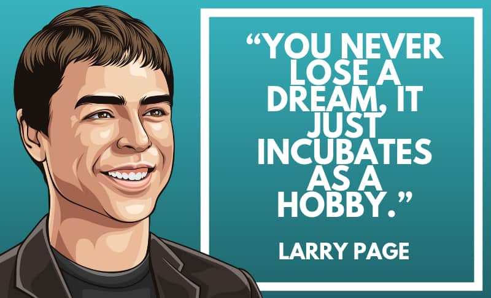

Liam Fletcher
December 7, 2020
St.Mother Teresa High School
Larry Page, byname of Lawrence Edward Page, (conceived Walk 26, 1973, East Lansing, Michigan, U.S.), American computer scientist and business visionary who, with Sergey Brin, made the online web index Google, one of the most well-known destinations on the Web.
Page, whose father was a teacher of software engineering at Michigan State College, gotten a PC science certificate from the College of Michigan (1995) and went into the doctorate program at Stanford, where he met Brin. Working from Page's residence room, they contrived another sort of web index innovation that utilized Web clients' own positioning capacities by following each website's "supporting connections"— that is, the quantity of different pages connected to them.
To additional their internet searcher, Page and Brin brought about $1 million up in external financing from speculators, family, and companions. They called their extended internet searcher Google—a name got from an incorrect spelling of the word googol (a numerical term for the number 1 followed by 100 zeros). By September 1998 the two had established Google Inc., with Page as CEO (Chief). The following year Google got $25 million of investment financing and was preparing 500,000 inquiries for each day.

Page has uncovered over $2 billion in gifts to his establishment in the course of recent years, generally in Google and Letters in order stock. Yet, everything considered, 96 percent of the cash that the Carl Victor Page Commemoration Establishment has then "gave" has gone not to charities, but rather to DAFs.
Page was the CEO of Google from 1997 until August 2001 (venturing down for Eric Schmidt) at that point from April 2011 until July 2015 when he moved to become Chief of Letter set Inc. (made to convey "significant headways" as Google's parent company), a post he held until December 4, 2019. He stays a Letter set board part, worker, and controlling shareholder.
Making Google constructed a lot of riches. Forbes set him tenth in the rundown "Tycoons 2019", and starting at July 2020, Page was the thirteenth most extravagant individual on the planet, with total assets of $69.4 billion, as indicated by Forbes.
Page is the co-maker and namesake of PageRank, a quest positioning calculation for Google Page that got the Marconi Prize in 2004 with co-essayist Brin.
“Larry Page.” Encyclopædia Britannica, Encyclopædia Britannica, Inc., www.britannica.com/biography/Larry-Page.
Schleifer, Theodore. “Google's Larry Page Gave $400 Million in Christmas Donations. Not a Penny Went Straight to Charity.” Vox, Vox, 18 Dec. 2019, www.vox.com/recode/2019/12/18/21010108/larry-page-philanthropy-foundation-donor-advised-fund-christmas.
“Larry Page.” Wikipedia, Wikimedia Foundation, 1 Dec. 2020, en.wikipedia.org/wiki/Larry_Page.